Contents
Bandpass Filter Design: Lab P-14: 2 Lab Exercises
clc
clear
close all
4.1
W = 0.4*pi; % Center frequency definition WW = -pi:(pi/1000):pi; % frequency range
4.1a)
L = 40; % Window length setup h_40 = BPF(L, W); % Band Pass filter with the length of 40 HH_40 = freqz(h_40, 1 ,WW); figure plot(WW, abs(HH_40)); title('Magnitude response of the Band Pass Filter L=40') xlabel('\omega') ylabel('|H|') figure plot(WW, angle(HH_40)); title('Phase response of the Band Pass Filter L=40') xlabel('\omega') ylabel('Phase value')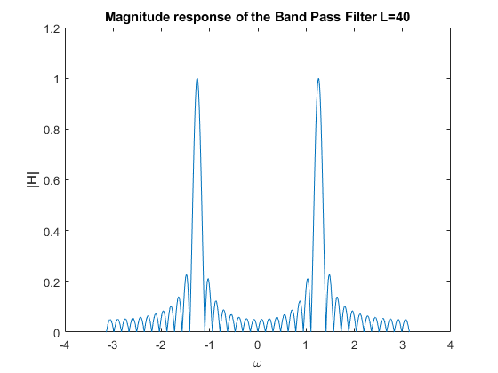 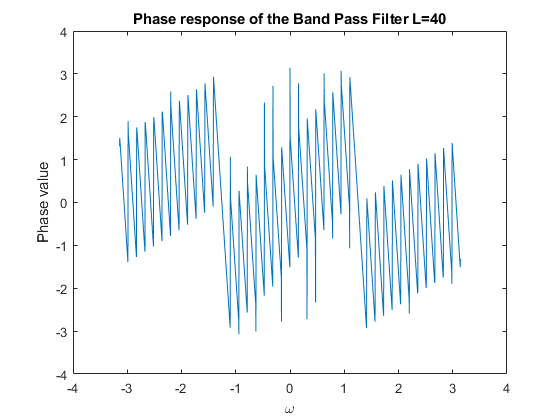
4.1b)
PB_40 = zeros(size(HH_40)); for i=1:length(HH_40) if abs(HH_40(i)) >= 0.5 PB_40(i) = abs(HH_40(i)); else PB_40(i) = 0; end end NUmnz_40 = nnz(PB_40)/2; % non zero element of PB vector for L = 40 fprintf("Bandpass Width (L=%d) is %d\n", L, NUmnz_40);
Bandpass Width (L=40) is 60
4.1c.1) L = 20
L = 20; % Window length setup h_20 = BPF(L, W); % Band Pass filter with the length of 20 HH_20 = freqz(h_20, 1, WW); figure plot(WW, abs(HH_20)); title('Magnitude response of the Band Pass Filter L=20') xlabel('\omega') ylabel('|H|') figure plot(WW, angle(HH_20)); title('Phase response of the Band Pass Filter L=20') xlabel('\omega') ylabel('Phase value') PB_20 = zeros(size(HH_20)); for i=1:length(HH_20) if abs(HH_20(i)) >= 0.5 PB_20(i) = abs(HH_20(i)); else PB_20(i) = 0; end end NUmnz_20 = nnz(PB_20)/2; % non zero element of PB vector for L = 20 fprintf("Bandpass Width (L=%d) is %d\n", L, NUmnz_20);
Bandpass Width (L=20) is 121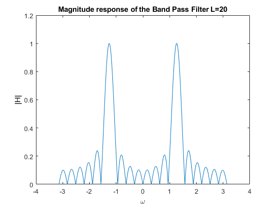 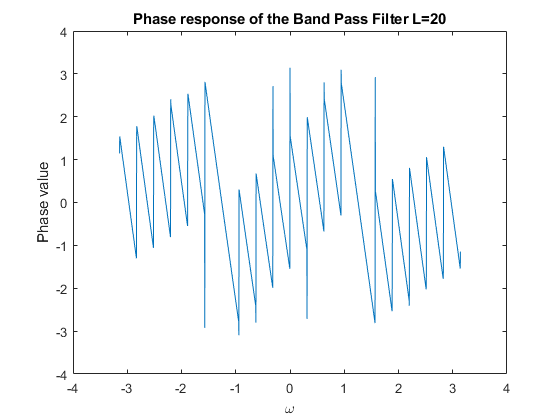
4.1c.2) L = 80
L = 80; % Window length setup h_80 = BPF(L, W); % Band Pass filter with the length of 80 HH_80 = freqz(h_80, 1, WW); figure plot(WW, abs(HH_80)); title('Magnitude response of the Band Pass Filter L=80') xlabel('\omega') ylabel('|H|') figure plot(WW, angle(HH_80)); title('Phase response of the Band Pass Filter L=80') xlabel('\omega') ylabel('Phase value') PB_80 = zeros(size(HH_80)); for i=1:length(HH_80) if abs(HH_80(i)) >= 0.5 PB_80(i) = abs(HH_80(i)); else PB_80(i) = 0; end end NUmnz_80 = nnz(PB_80)/2; % non zero element of PB vector for L = 80 fprintf("Bandpass Width (L=%d) is %d\n", L, NUmnz_80);
Bandpass Width (L=80) is 31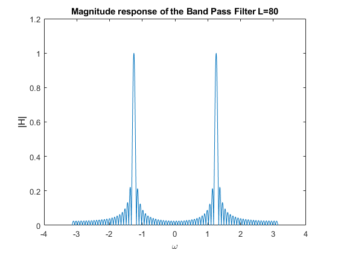 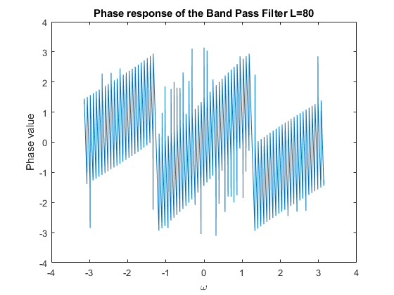
4.1c.3) Comparison of 20, 40, 80
figure; plot(WW,abs(HH_40),'k') hold on plot(WW, PB_40, 'g-*', WW, PB_80, 'r-o', WW, PB_20, 'b-^') title('Magnitude response of the Band Pass Filter') xlabel('\omega'); ylabel('Phase value') legend('Output response BPF','40','80','20') figure; plot(WW, angle(HH_20), 'b-^', ... WW, angle(HH_40), 'g-*', ... WW, angle(HH_80), 'r-o') title('Phase response of the Band Pass Filter') xlabel('\omega'); ylabel('Phase value') legend('40','20','80');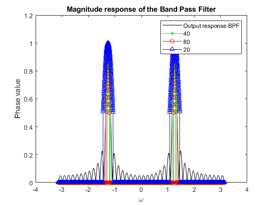 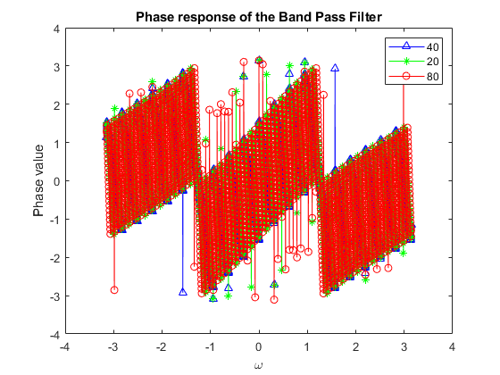
4.1c.4) What happens when L is doubled or halved?
When L is doubled the pass band width is halved. When L is halved the pass band width is doubled.
4.2
w_hat = 0.25*pi;
4.2a
L=41; pause(1) HH = p4sub(L, w_hat);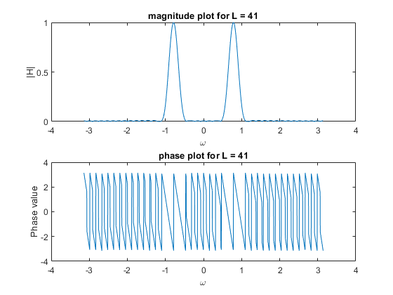
4.2b.1 L=41
determinePassBand(L, HH);
Pass band width=0.279602 radians for L = 41
4.2b.2 L=21
L=21; HH = p4sub(L, w_hat); determinePassBand(L, HH);
Mag & Phase Response of Frequencies of Interests (L=21) w | mag | phase 0.000pi | 0.005499 | -3.110177 0.100pi | 0.104399 | -3.110177 0.250pi | 1.000601 | -1.539380 0.400pi | 0.121711 | 0.031416 0.500pi | 0.005508 | 0.031416 0.750pi | 0.000164 | 1.602212 Pass band width=0.568628 radians for L = 21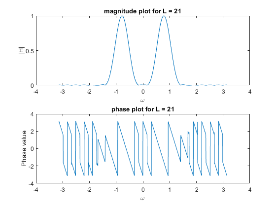
4.2b.3 L=81
L=81; HH = p4sub(L, w_hat); determinePassBand(L, HH);
Mag & Phase Response of Frequencies of Interests (L=81) w | mag | phase 0.000pi | 0.003661 | 0.125664 0.100pi | 0.004098 | 0.125664 0.250pi | 0.999627 | 0.125664 0.400pi | 0.002718 | 0.125664 0.500pi | 0.003043 | 0.125664 0.750pi | 0.003437 | 0.125664 Pass band width=0.141372 radians for L = 81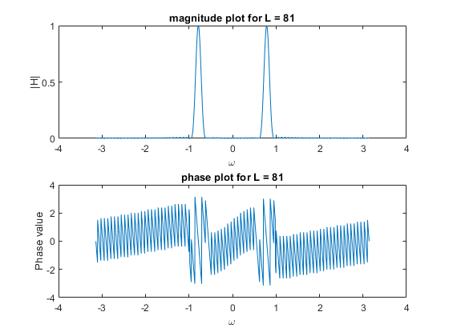
4.2c
fprintf("x[n] = %f + %fcos(0.1pi*n + %f) + %fcos(0.25pi*n + %f)\n", ... 2 * 0.007350, 2 * 0.007290, pi/3-3.078761, 1.001234, -pi/3 - 3.078761);
x[n] = 0.014700 + 0.014580cos(0.1pi*n + -2.031563) + 1.001234cos(0.25pi*n + -4.125959)
4.2d
The magnitude response of the filter is approximately 1 at 0.25pi This means that the magnitude of the response will be scaled by approximately 1 at the frequency on the other hand, the magnitude is approximately 0 away from 0.25 pi This means that the magnitude of the response will be approximately 0 for frequencies away from 0.25pi
4.2 Functions
function HH = p4sub(L, w_hat) w = -pi:(pi/1000):pi; h = gen_hamming(w_hat, L); HH = freqz(h, 1, w); figure subplot(2,1,1); plot(w, abs(HH)); xlabel('\omega'); ylabel('|H|'); title(sprintf("magnitude plot for L = %d", L)) subplot(2,1,2); plot(w, angle(HH)); xlabel('\omega'); ylabel('Phase value') title(sprintf("phase plot for L = %d", L)) foi = [0, 100, 250, 400, 500, 750]; % Frequencies of Interest fprintf("Mag & Phase Response of Frequencies of Interests (L=%d)\n", L); fprintf(" w | mag | phase\n"); for i = foi fprintf("0.%03dpi | %.6f | %.6f \n", i, abs(HH(1000+i)), angle(HH(1000+i))); end end function width = determinePassBand(L, HH) width = nnz(abs(HH) > 0.5) / 2; fprintf("Pass band width=%f radians for L = %d\n\n", width * pi/1000, L); end
Mag & Phase Response of Frequencies of Interests (L=41) w | mag | phase 0.000pi | 0.007350 | -3.078761 0.100pi | 0.007290 | -3.078761 0.250pi | 1.001234 | -3.078761 0.400pi | 0.006967 | -3.078761 0.500pi | 0.006841 | -3.078761 0.750pi | 0.007136 | -3.078761